01. 처음 수업 준비
상황 처음 사용하는 운영자가 파이썬 기초 실습 과정을 열고 수강생의 접속을 준비합니다.
01. 배포 ZIP과 첫 실행
- 다운로드와 압축 해제 v1.3.0의 Windows x64 배포 ZIP 전체를 쓰기 가능한 폴더에 풉니다. Python과 라이브러리가 포함되어 있습니다.
- 관리창 실행 폴더 안의 start.bat를 더블클릭합니다. 관리창이 열리면 새 과정 만들기를 선택합니다.
ZIP 내부에서 직접 실행하지 마세요. setup.bat는 선택적인 오프라인 점검이며 설치 도구가 아닙니다.
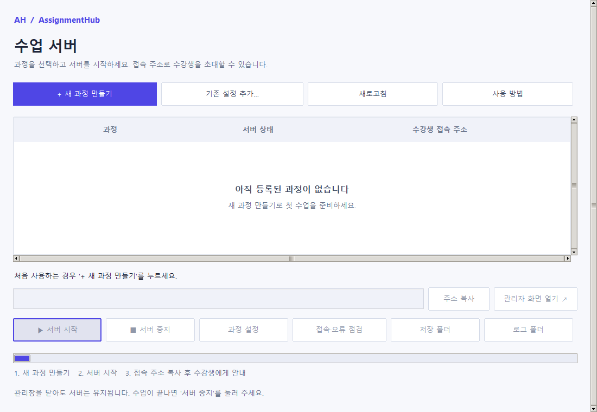
새 과정과 관리자 계정
- 수업 예시 과정명은 파이썬 기초 실습으로 입력합니다. 안내 IP는 실제 서버 PC의 교육장 네트워크 주소를 선택합니다.
- 저장 위치와 계정 과정 ID·포트·저장 폴더를 확인합니다. 관리자 ID와 8~128자의 비밀번호를 정하고 확인란에도 입력합니다.
캡처의 127.0.0.1과 임시 경로는 예시입니다. 다른 PC에는 실제 서버의 IP와 포트를 안내합니다.
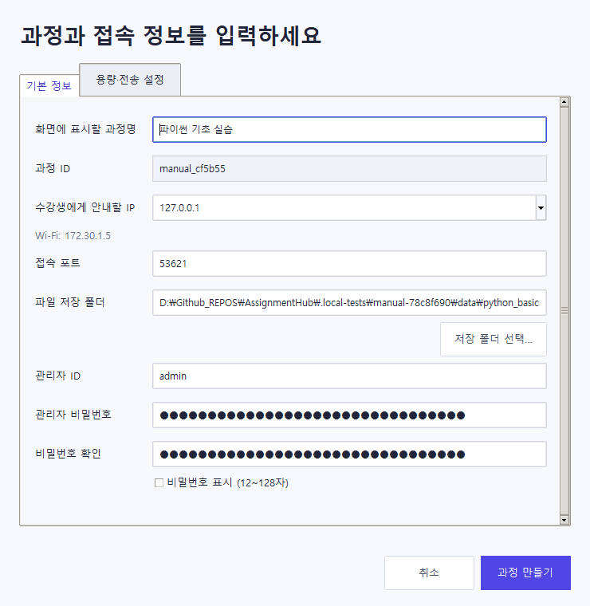
용량과 전송 설정
- 기본값 확인 파일당 2 GiB, 수강생별 누적 10 GiB, 디스크 최소 여유 5 GiB입니다. 한 번에 최대 10개 파일을 제출합니다.
- 과정 생성 용량·전송 설정을 확인한 뒤 과정 만들기를 누릅니다. 다음 수업부터는 저장된 과정을 선택하면 됩니다.
누적 사용량에는 다른 과제와 이전 제출 버전도 포함합니다. 기존 파일은 한도를 낮춰도 삭제되지 않습니다.
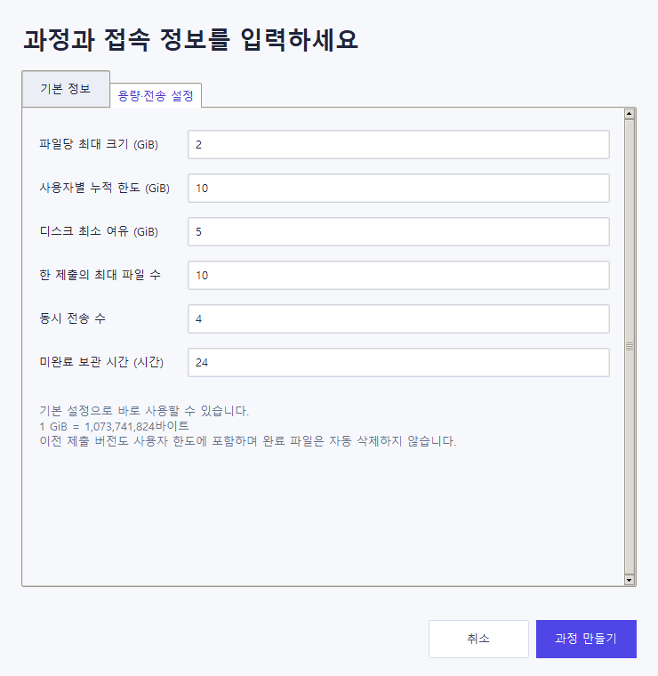
서버 시작과 주소 안내
- 실행 중 확인 과정을 선택하고 서버 시작을 누릅니다. 상태가 실행 중이 되면 관리자 화면 열기를 선택합니다.
- 수강생 접속 확인 주소 복사로 URL을 전달합니다. 예: http://192.168.0.10:8501. 수강생 PC에서도 같은 주소가 열리는지 확인합니다.
예시 IP를 그대로 쓰지 말고 실제 주소로 바꾸세요. 관리창을 닫아도 서버는 계속 실행됩니다.
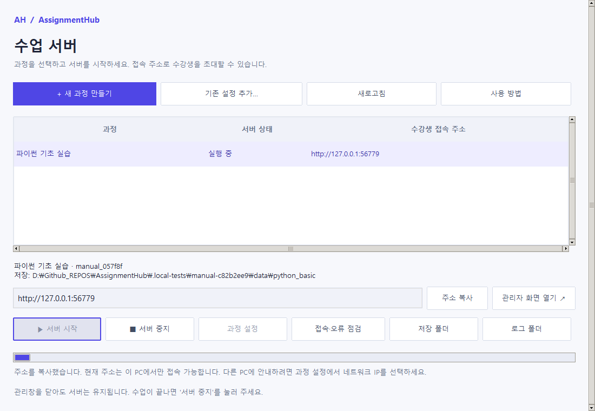
관리자의 수업 준비
- 관리자 로그인 과정을 만들 때 정한 관리자 계정으로 로그인합니다. 운영 안내에서 수강생 명단 등록으로 이동합니다.
- 준비 완료 기준 명단이 등록되고 수업에 사용할 과제가 접수 중인지 확인합니다. 학생에게 접속 주소와 본인의 계정을 안내합니다.
학생별 임시비밀번호를 전체 공지에 올리지 말고 해당 학생에게 전달합니다.
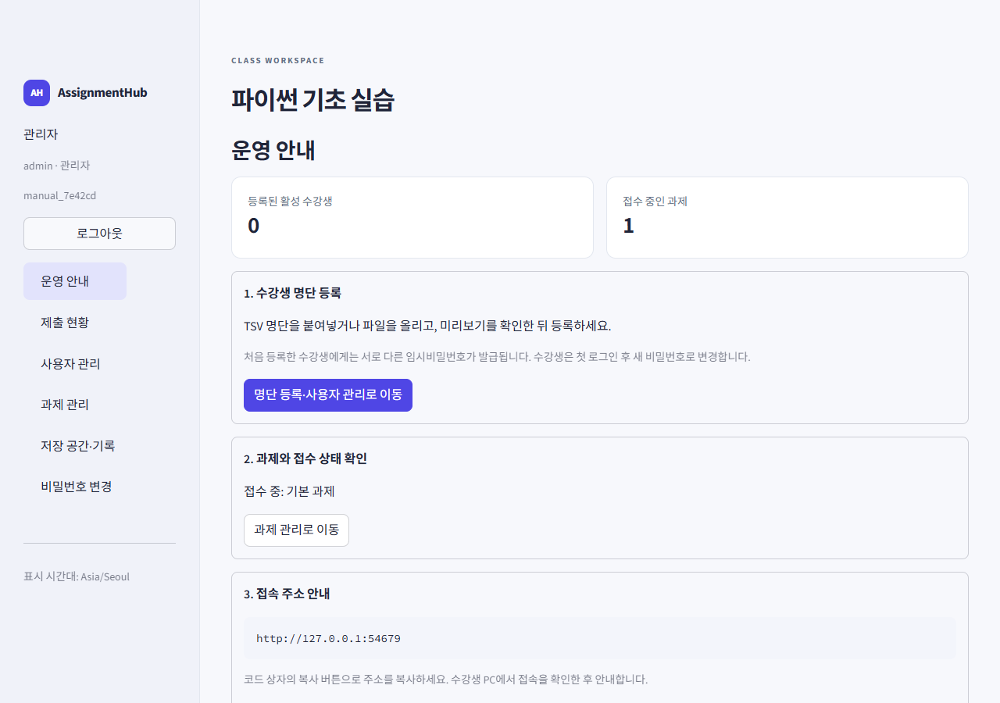
완료 확인 서버 관리창에서 실행 중을 확인하고, 관리자 로그인과 실제 수강생 PC의 접속을 확인합니다.
02. TSV 명단 등록
상황 001 홍길동 A반과 002 김민수 B반을 처음 등록합니다. 명단은 직접 붙여넣거나 파일로 입력합니다.
user_id name group 001 홍길동 A반 002 김민수 B반
예시 다운로드: 03-duplicate-error.tsv
user_id name group 001 홍길동 A반 001 김민수 B반
02. TSV 명단 붙여넣기
- 첫 명단 예시 user_id, name, group 헤더와 001 홍길동 A반, 002 김민수 B반을 탭으로 구분해 붙여넣습니다.
- 미리보기와 반영 명단 검증 및 미리보기를 누릅니다. 오류가 없고 ID·이름·그룹이 맞으면 검증된 명단 반영을 누릅니다.
user_id와 name은 필수, group은 선택입니다. 엑셀에서 헤더를 포함한 셀 범위를 복사해도 됩니다.
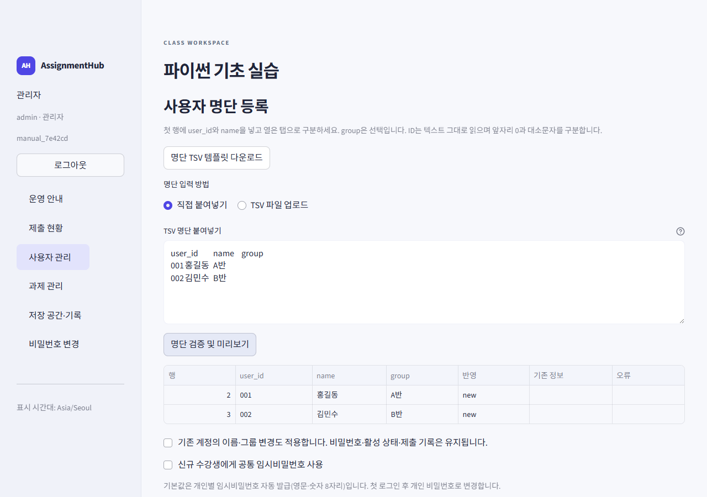
TSV 파일과 공통 임시비밀번호
- TSV 파일 등록 명단 TSV 템플릿 또는 01-first-roster.tsv를 수정해 올립니다. 검증 후 ID·이름·그룹을 확인합니다.
- 공통 비밀번호(선택) 신규 수강생에게 공통 임시비밀번호 사용을 켜고 영문·숫자 8자리를 입력합니다. 이번 명단의 신규 계정에 같은 값이 적용됩니다.
기본은 개인별 임시비밀번호 8자리입니다. 공통값은 명단 등록 때 지정하며, 추가 등록 시 같은 값을 다시 입력합니다.
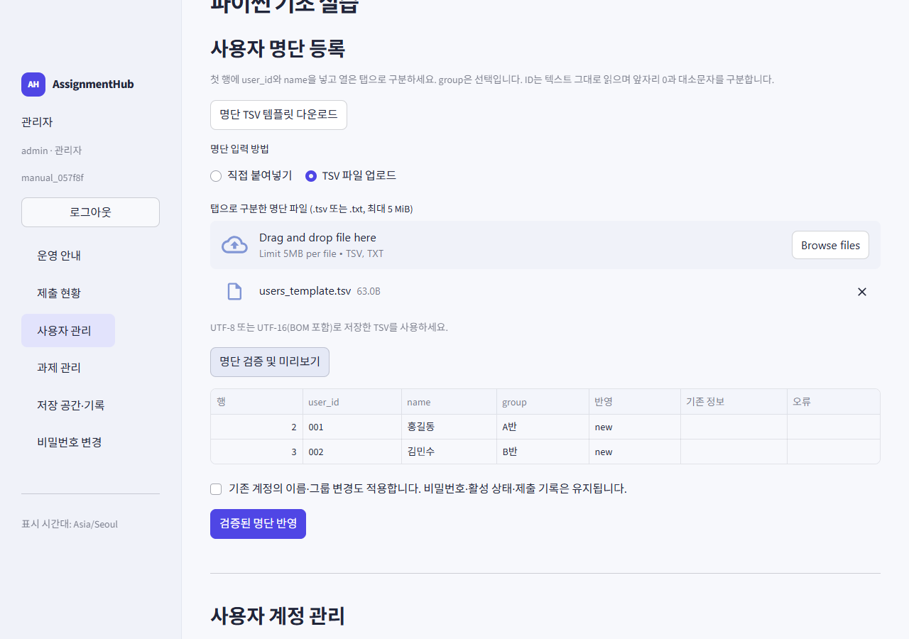
중복 명단 오류 수정
- 오류 예시 001을 서로 다른 두 사람에게 입력하면 중복 ID 오류가 표시됩니다. 검증된 명단 반영은 사용할 수 없습니다.
- 수정 후 재검증 두 번째 ID를 002로 고친 뒤 다시 검증합니다. 입력 내용이나 입력 방법이 바뀌면 이전 미리보기는 해제됩니다.
엑셀에서 이미 숫자로 바뀌어 사라진 0은 복원하지 않습니다. 001과 1은 서로 다른 계정입니다.
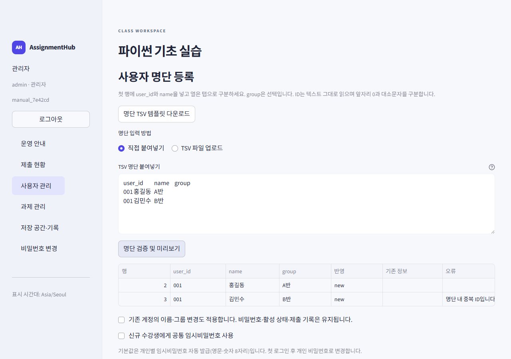
임시비밀번호 전달
- 신규 계정 확인 신규 계정의 임시비밀번호는 영문·숫자 8자리입니다. 임시비밀번호 결과 CSV를 내려받아 본인 ID와 함께 전달합니다.
- 결과 닫기 전달을 마치면 임시비밀번호 결과 닫기를 누릅니다. 화면 예시는 결과를 닫은 뒤의 사용자 목록입니다.
명단 입력은 TSV입니다. 비밀번호와 현황의 내보내기 파일은 CSV이며, 초기 비밀번호는 다시 조회할 수 없습니다.
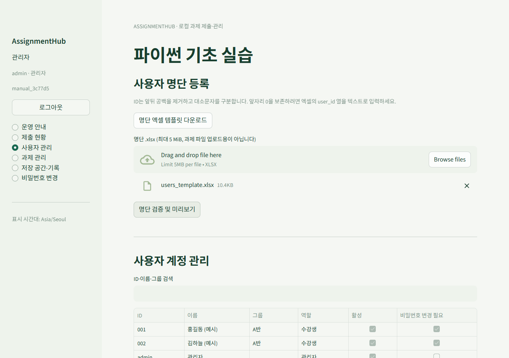
완료 확인 두 계정의 ID와 그룹이 정확히 등록되고 각 학생에게 본인의 임시비밀번호를 전달합니다.
03. 추가 등록·그룹 변경·초기화
상황 002의 그룹을 A반으로 옮기고, 뒤늦게 합류한 003 이서연을 B반에 추가합니다. 비밀번호 분실 시의 초기화 절차도 확인합니다.
예시 다운로드: 02-add-and-update.tsv
user_id name group 002 김민수 A반 003 이서연 B반
03. 추가 등록과 그룹 변경
- 변경 명단 예시 002 김민수를 B반에서 A반으로 옮기고, 003 이서연을 B반에 추가합니다. 두 행만 TSV로 입력해 검증합니다.
- 기존 정보 갱신 기존 계정의 이름·그룹 변경도 적용 옵션을 선택하고 반영합니다. 신규 1명 등록과 기존 1명 변경을 확인합니다.
기존 비밀번호·활성 상태·제출은 유지합니다. 이번 TSV에 없는 기존 계정을 삭제하거나 비활성화하지 않습니다.
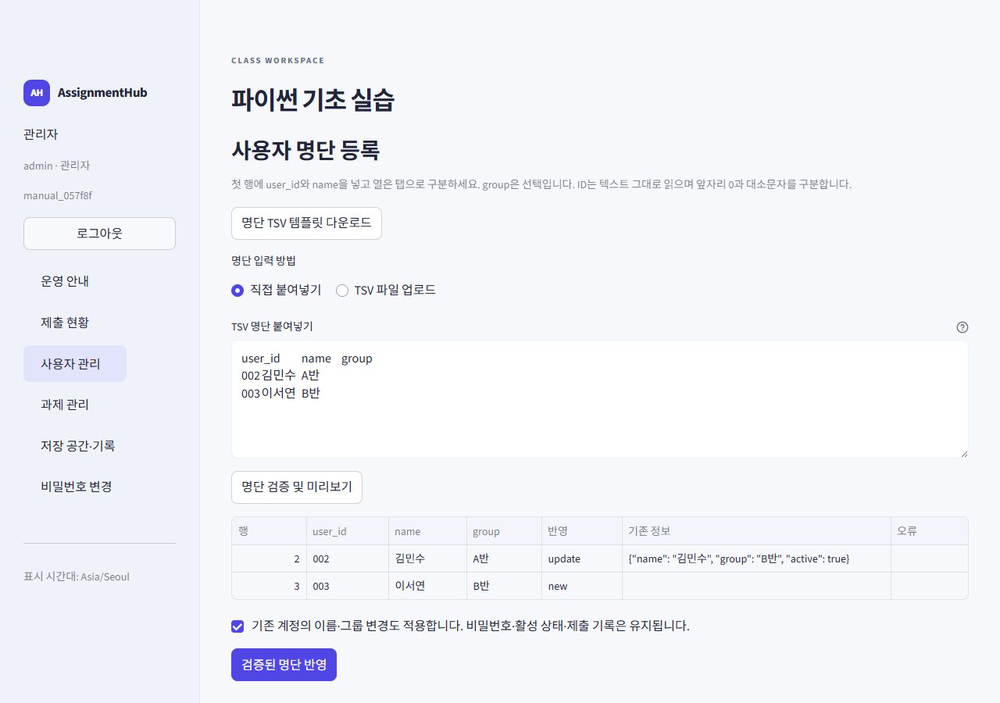
비밀번호를 잊은 수강생
- 대상 확인 사용자 관리에서 ID 002를 검색하고 관리할 수강생을 확인합니다. 기존 권한 무효화 안내에 체크합니다.
- 초기화와 재로그인 비밀번호 초기화를 눌러 새 임시비밀번호를 해당 학생에게 전달합니다. 학생은 새 비밀번호로 변경 후 다시 로그인합니다.
초기화는 기존 로그인·업로드 권한을 즉시 무효화합니다. 완료된 제출 파일과 이력은 유지합니다.
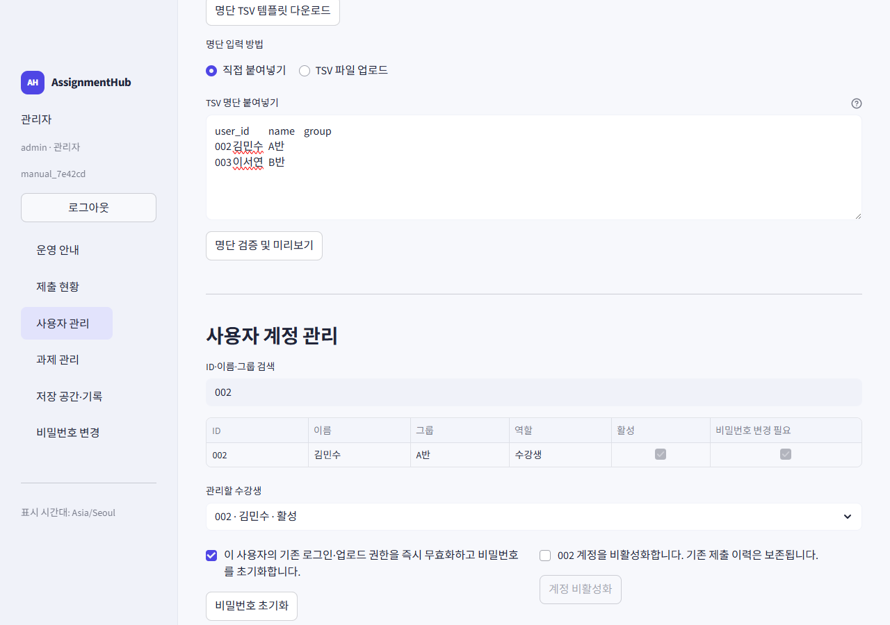
완료 확인 기존 계정의 이력을 유지하면서 1명 추가와 1명 변경을 확인합니다. 초기화한 학생은 새 임시비밀번호로 비밀번호를 변경합니다.
04. 과제 생성과 접수 종료
상황 1주차 실습 과제를 만들고 파일 접수를 시작합니다. 수업이 끝나면 같은 과제의 신규 접수를 닫습니다.
04. 과제 생성과 접수 시작
- 과제 작성 과제 관리에서 새 과제 추가를 펼칩니다. 제목은 1주차 실습 과제, 설명에는 제출할 파일과 수정본 처리 방법을 적습니다.
- 접수 시작 즉시 접수 시작을 확인하고 과제 추가를 누릅니다. 학생에게 여러 과제 중 선택할 정확한 제목을 안내합니다.
처음 생성된 기본 과제를 수정해 사용해도 됩니다. 여기서는 별도 과제를 추가하는 상황입니다.
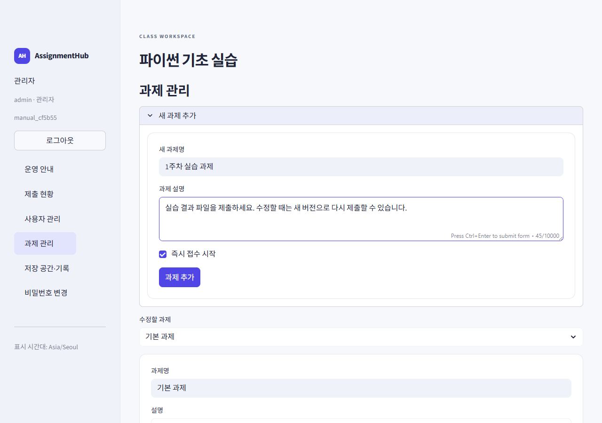
과제 접수 종료
- 마감 예시 수업 종료 시 과제 관리에서 1주차 실습 과제를 선택합니다. 접수 중을 해제하고 변경 사항 저장을 누릅니다.
- 종료의 범위 이후 신규 제출 시작을 막습니다. 종료 전에 시작한 유효한 업로드는 보관 시간 내에 완료할 수 있습니다.
즉시 모든 전송을 멈춰야 한다면 학생에게 안내하고 서버를 중지합니다. 접수 종료만으로 기존 전송을 끊지 않습니다.
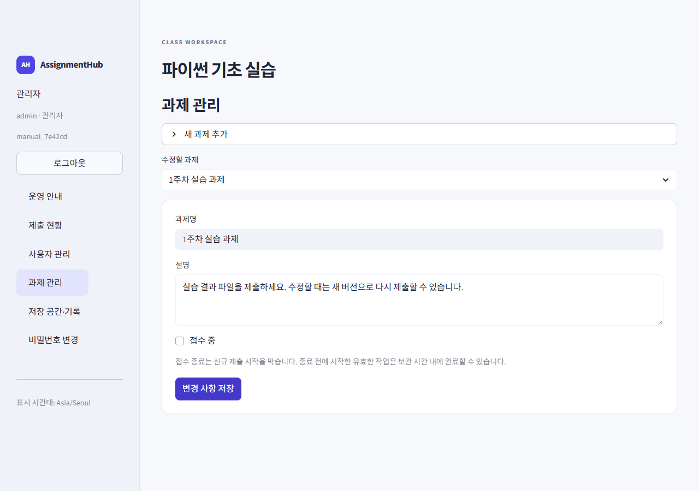
완료 확인 학생에게 안내한 과제가 접수 중으로 보이고, 마감 후에는 신규 제출을 시작할 수 없습니다. 기존 진행 작업의 완료 가능 여부를 별도로 안내합니다.
05. 첫 로그인과 바로 제출
상황 학생 001이 전달받은 계정으로 처음 로그인하고 파일 제출 창에 연결합니다.
05. 학생의 첫 로그인
- 받은 계정 입력 서버 주소를 열고 ID 001과 본인의 임시비밀번호로 로그인합니다. ID의 앞자리 0과 대소문자를 그대로 입력합니다.
- 비밀번호 변경 현재 임시비밀번호와 새로운 8~128자 비밀번호를 입력합니다. 변경을 마치고 새 비밀번호로 다시 로그인합니다.
첫 비밀번호 변경을 마쳐야 과제를 조회하고 파일을 제출할 수 있습니다.
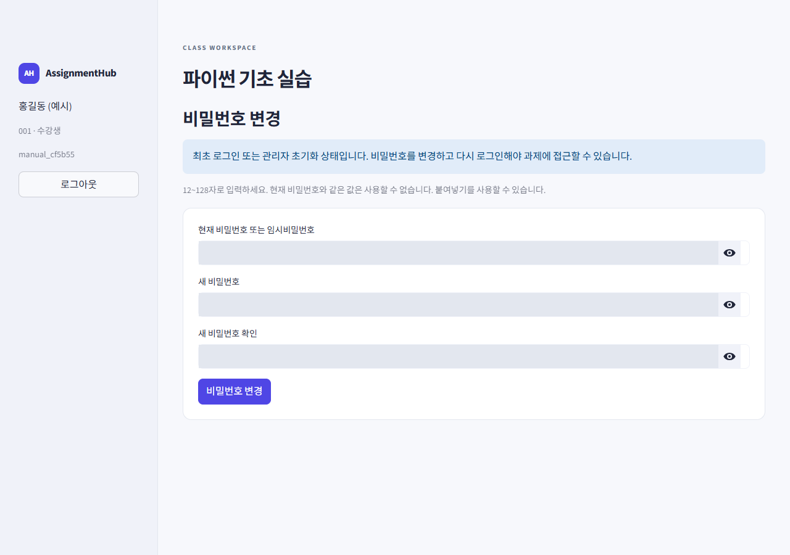
과제 선택 후 바로 제출
- 제출할 과제 선택 수업 화면에서 안내받은 과제를 고릅니다. 과제 설명과 접수 상태를 확인합니다.
- 파일 제출 버튼 파일 제출·이어 올리기를 누릅니다. 현재 로그인한 계정과 선택한 과제로 제출 창이 바로 열립니다.
코드 발급이나 입력 없이 제출할 수 있습니다. 수업 화면에서 로그아웃하면 열어 둔 제출 창의 로그인도 종료됩니다.
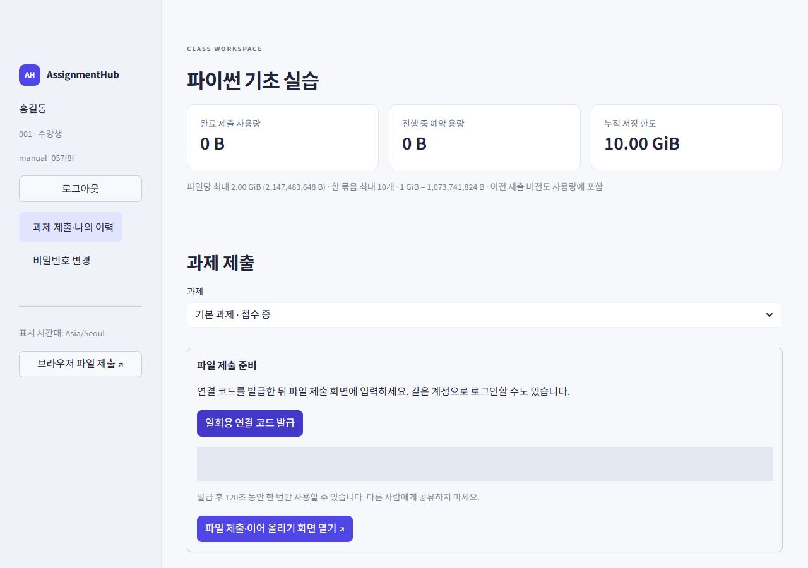
파일 선택 화면 확인
- 본인 계정과 과제 확인 제출 창에 본인의 ID와 선택한 과제가 표시됩니다. 파일을 선택한 뒤 제출 시작을 누릅니다.
- 주소로 직접 접속한 경우 제출 창 주소를 직접 열었거나 로그인이 끝났다면 본인 ID와 변경한 비밀번호로 로그인합니다.
파일 전송이 중단되면 미완료 작업을 선택해 이어 올릴 수 있습니다. 처음 선택한 원본 파일을 그대로 보관하세요.
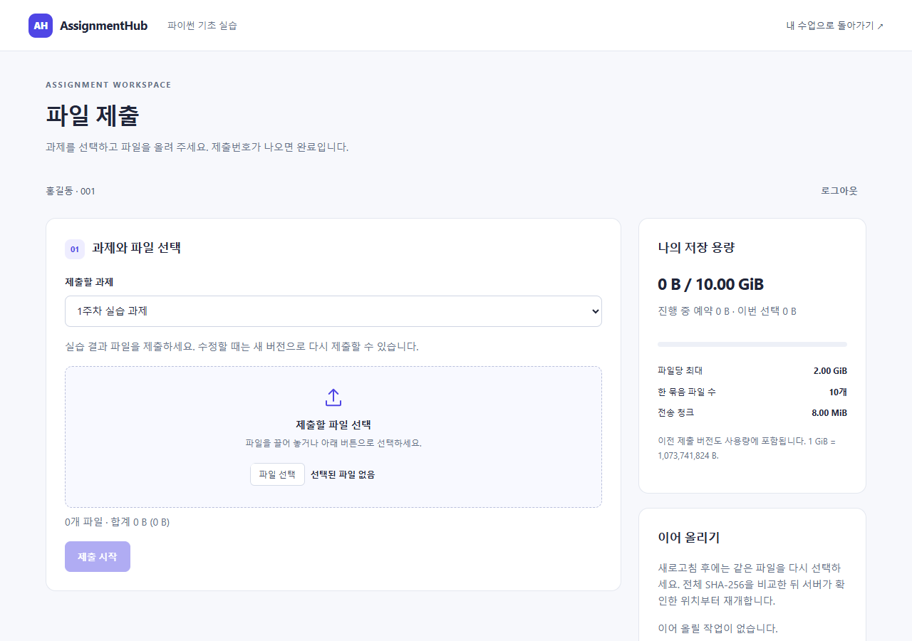
완료 확인 첫 비밀번호 변경과 재로그인을 마친 뒤, 제출 창에 본인의 ID가 표시됩니다.
06. 여러 파일 제출과 완료 확인
상황 학생 001이 1주차_실습결과.txt와 제출_설명.txt를 하나의 묶음으로 제출합니다.
06. 여러 파일을 한 번에 제출
- 파일 선택 예시 1주차 실습 과제를 선택하고 1주차_실습결과.txt와 제출_설명.txt를 함께 선택합니다. PC에서는 끌어 놓기도 가능합니다.
- 전송 시작 파일명·개수·총용량과 내 저장 공간을 확인합니다. 제출 시작을 누르고 전송·검증·저장 상태를 기다립니다.
파일 선택만으로 전송되지 않습니다. 여러 파일은 하나의 묶음으로, 모두 끝나야 완료 제출로 집계됩니다.
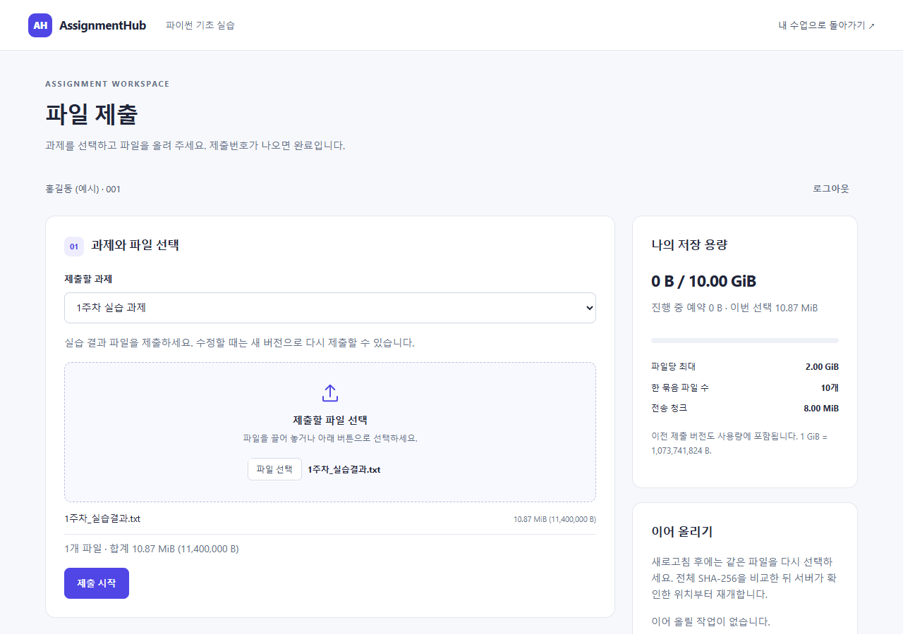
제출 완료와 제출번호
- 완료 기준 제출이 완료되었습니다 안내와 제출번호가 나타나는지 확인합니다. 100% 진행률만으로 제출 완료를 판단하지 않습니다.
- 내역 확인 과제명, ID, 파일 목록, 버전과 서버 완료 시각을 확인합니다. 문의할 때 제출번호를 함께 알려 주세요.
제출 이력에서 파일을 다운로드해 서버에 저장된 내용을 확인할 수 있습니다.
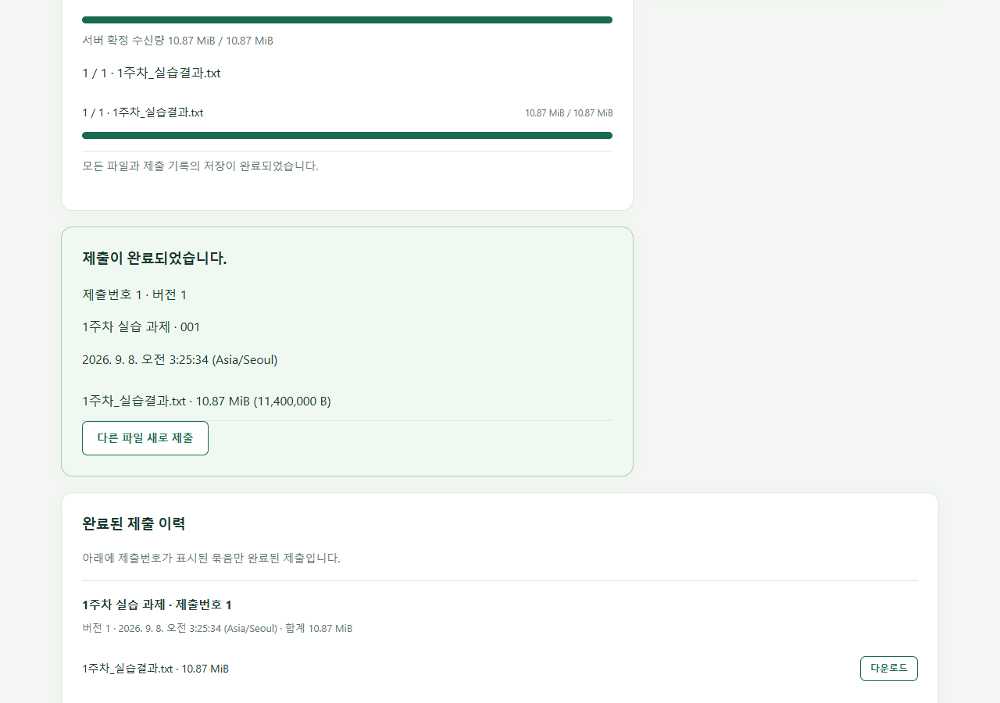
완료 확인 두 파일 모두 검증·저장을 마치고 제출번호와 버전 1이 표시됩니다. 내려받은 파일 내용이 원본과 같은지 확인할 수 있습니다.
07. 중단 후 이어 올리기
상황 전송 도중 연결이 끊기고 브라우저를 새로고침했습니다. 처음 선택한 두 원본 파일은 수정하지 않은 상태입니다.
07. 전송 도중 연결이 끊긴 경우
- 중단 상황 예시는 첫 파일의 일부가 서버에 저장된 뒤 전송이 중단된 상태입니다. 원본 파일을 수정하지 않고 보관합니다.
- 같은 창에서 재시도 네트워크가 복구되면 다시 시도를 누릅니다. 계속 실패하면 관리자에게 접속 상태와 남은 공간을 확인해 달라고 요청합니다.
서버가 확정한 수신량부터 이어 올립니다. 완료 전의 작업은 제출자 수에 포함되지 않습니다.
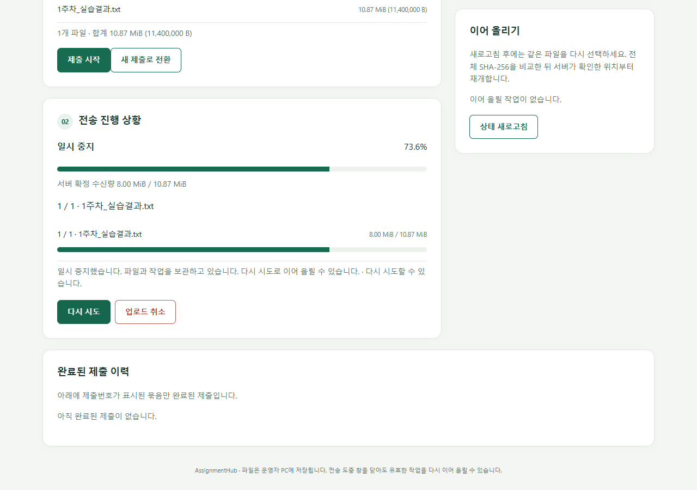
새로고침 후 이어 올리기
- 미완료 작업 선택 다시 로그인하고 이어 올리기에서 이 작업 이어 올리기를 누릅니다. 좁은 화면에서는 아래로 스크롤합니다.
- 동일 원본 다시 선택 처음의 두 파일을 모두 다시 선택하고 확인 후 이어 올리기를 누릅니다. 서버가 확인한 지점부터 전송을 계속합니다.
이름·크기·내용이 같은 원본이어야 합니다. 수정한 파일은 미완료 작업을 취소하고 새로 제출합니다.
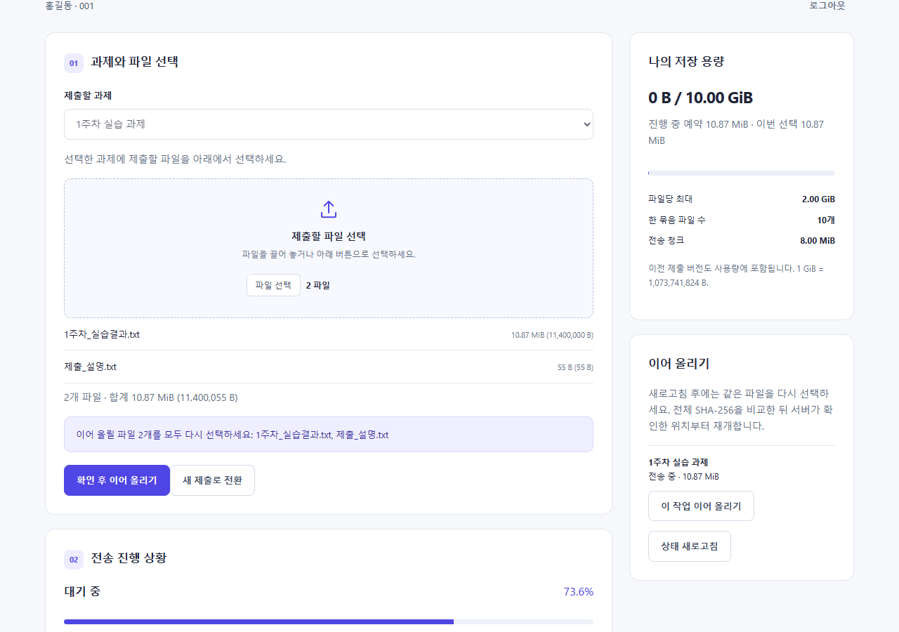
완료 확인 기존 미완료 작업을 선택한 뒤 동일 원본으로 이어 올려 제출번호를 확인합니다. 원본이 달라졌다면 기존 작업을 취소하고 새 제출을 시작합니다.
08. 수정본 재제출
상황 완료한 실습 결과를 수정해 1주차_실습결과_수정본.txt를 같은 과제에 다시 제출합니다.
08. 제출한 파일의 수정본 등록
- 새 제출 선택 이미 완료한 파일을 수정했다면 다른 파일 새로 제출을 누릅니다. 같은 과제를 선택하고 수정본 파일을 고릅니다.
- 새 버전 확인 제출 시작을 누른 뒤 새로운 제출번호와 버전 2를 확인합니다. 이전에 완료한 버전 1은 보존됩니다.
수정본을 기존 미완료 작업에 이어 붙이지 않습니다. 예시는 1주차_실습결과_수정본.txt를 새로 제출합니다.
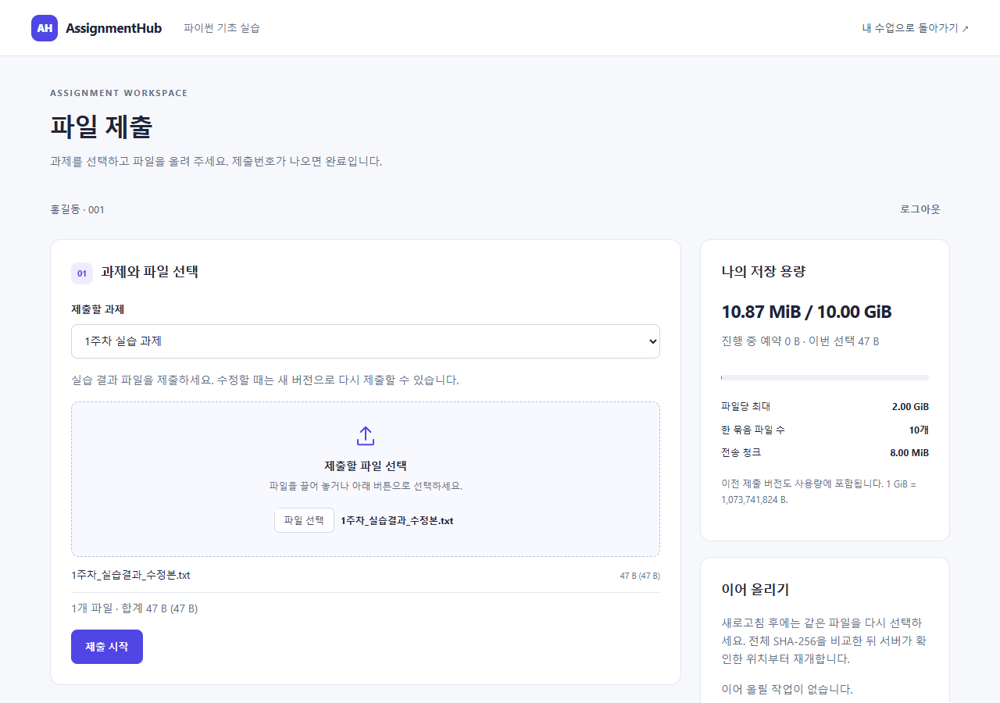
최신 파일과 이전 버전
- 이력 비교 완료된 제출 이력에서 버전 2와 버전 1을 확인합니다. 각 묶음의 파일 목록과 완료 시각을 비교할 수 있습니다.
- 필요한 파일 다운로드 원하는 버전의 다운로드를 누릅니다. 새 제출이 실패하더라도 이전 완료 제출은 계속 남아 있습니다.
이전 버전도 학생의 누적 저장 용량에 포함됩니다. 같은 파일명도 제출 버전마다 따로 보존합니다.
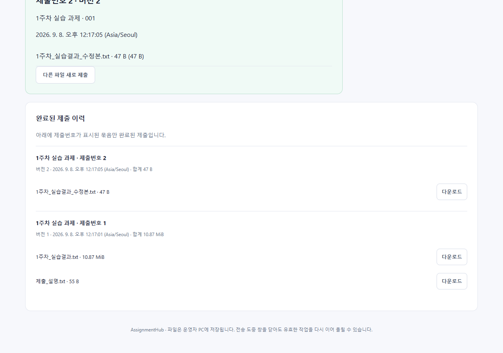
완료 확인 새 제출번호와 버전 2를 확인합니다. 완료된 제출 이력에 버전 1과 2가 모두 남아 있습니다.
09. 미제출자·파일·용량 확인
상황 운영자가 활성 수강생 3명의 제출 여부를 확인합니다. 001은 두 번 제출했고 002와 003은 아직 완료 제출이 없습니다.
09. 관리자 제출 현황 확인
- 수업의 제출 현황 조회할 과제로 1주차 실습 과제를 선택합니다. 예시는 활성 3명 중 001만 두 번 제출한 상태입니다.
- 집계 해석 제출자는 1명, 미제출자는 2명입니다. 같은 학생이 여러 번 제출해도 제출자 수는 한 명으로 계산합니다.
관리자와 미완료 작업은 제출자 수에 포함하지 않습니다. 완료된 제출을 기준으로 확인합니다.
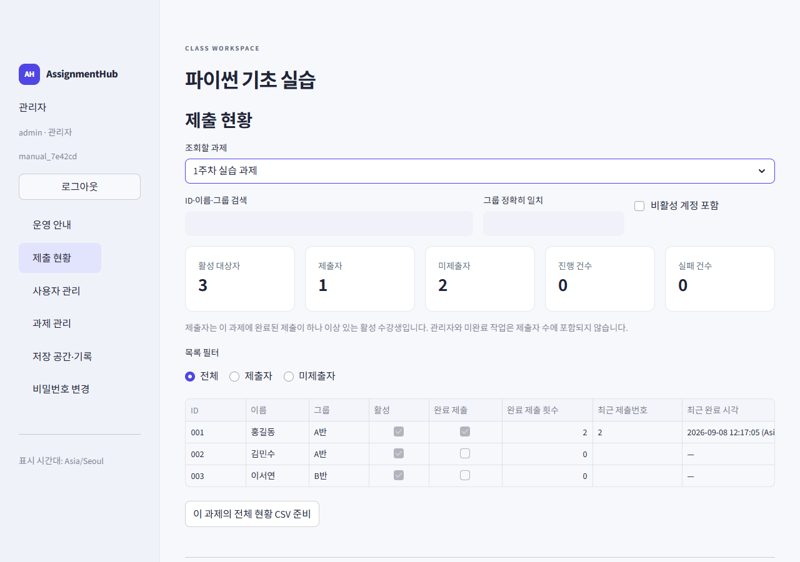
미제출자와 그룹 확인
- 미제출자 조회 목록 필터에서 미제출자를 선택합니다. 예시에서는 002와 003에게 제출 여부를 확인하면 됩니다.
- 그룹별 확인 그룹 정확히 일치에 A반을 입력하면 해당 그룹을 조회합니다. 비활성 계정 기록은 포함 옵션을 켜서 확인합니다.
검색·그룹 조건이 적용된 현황과 전체 현황 CSV의 범위를 구분하세요.
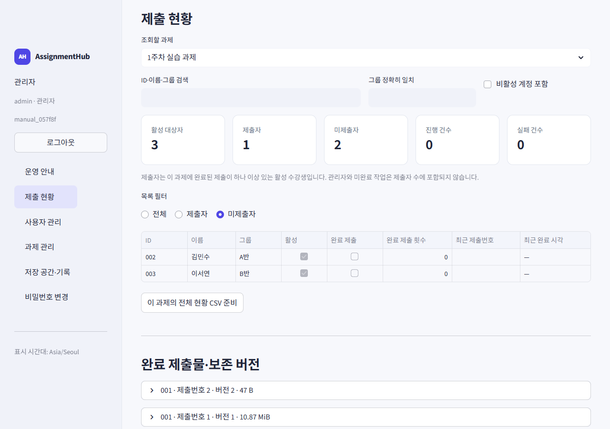
파일 확인과 현황 내보내기
- 완료 제출물 확인 원하는 제출번호를 펼쳐 파일명·용량·버전을 확인합니다. 다운로드 준비를 누른 뒤 파일 다운로드를 선택합니다.
- CSV 내보내기 이 과제의 전체 현황 CSV 준비를 누르고 다운로드합니다. 이 파일은 화면 필터와 관계없이 해당 과제의 전체 현황입니다.
명단을 넣을 때는 TSV, 결과를 내보낼 때는 CSV를 사용합니다. 학생별 계정 정보를 포함한 파일은 관리자가 보관합니다.
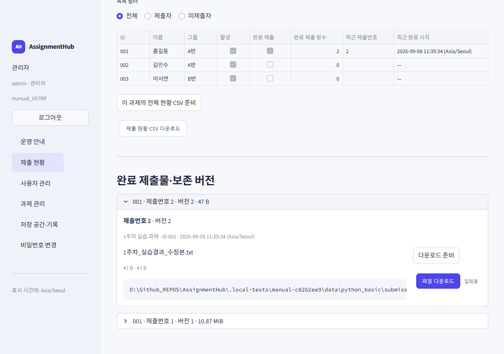
저장 공간이 부족한 경우
- 항목별 확인 저장 공간·기록에서 완료 사용량, 예약 용량, 임시 파일 실사용량과 볼륨 잔여 공간을 확인합니다.
- 공간 확보 학생이 불필요한 미완료 작업을 취소하게 하거나 서버 볼륨의 공간을 확보합니다. 한도 변경은 해당 서버를 중지한 뒤 진행합니다.
완료 제출 파일은 자동 삭제하지 않습니다. 데이터 폴더 안의 파일을 임의로 지우지 마세요.
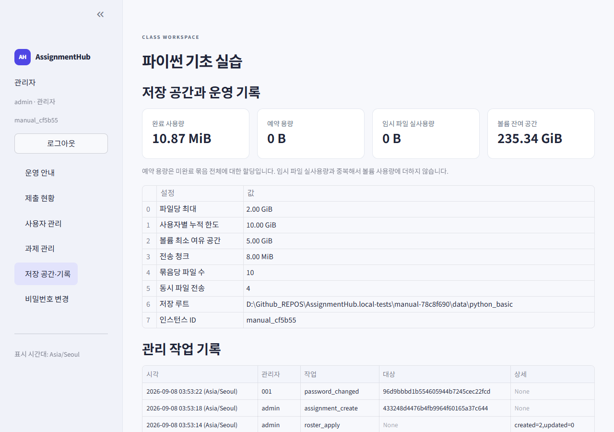
완료 확인 제출자 1명과 미제출자 2명을 확인합니다. 원하는 버전의 파일과 해당 과제 전체 현황 CSV를 내려받습니다.
10. 두 수업 동시 운영
상황 한 PC에서 파이썬 기초 실습과 데이터 분석 오후반을 별도 과정으로 운영합니다.
10. 두 수업을 동시에 운영
- 오전반과 오후반 파이썬 기초 실습과 데이터 분석 오후반을 별도 과정으로 만듭니다. 각 과정의 ID·포트·저장 폴더를 다르게 정합니다.
- 수업별 주소 안내 두 과정을 시작하고 각각의 URL을 안내합니다. 한 과정의 서버를 중지해도 다른 과정은 계속 실행됩니다.
계정과 제출물은 과정별로 분리됩니다. 같은 학생 ID가 있어도 다른 과정의 계정으로 자동 로그인되지 않습니다.
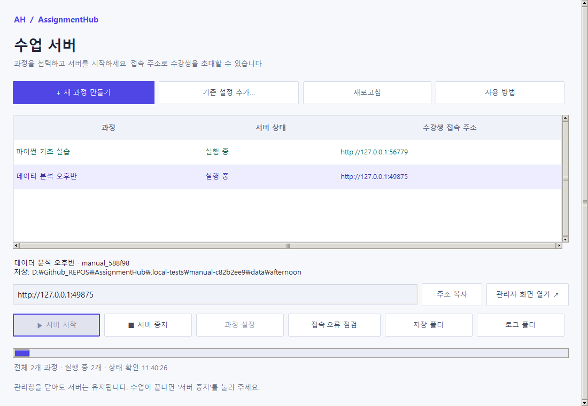
완료 확인 서로 다른 포트·저장 폴더로 두 과정을 실행하고, 한 과정을 중지해도 다른 과정이 계속 실행되는지 확인합니다.
11. 종료·백업·복원
상황 하루 수업을 마친 운영자가 서버를 중지하고 설정과 데이터를 날짜별로 백업합니다. 복원은 별도 빈 폴더에서 진행하는 예시입니다.
11. 수업 종료와 서버 중지
- 접수와 작업 마무리 과제 접수를 종료하고 진행 중인 학생의 완료를 기다리거나 중단 시간을 안내합니다. 제출 현황을 확인합니다.
- 중지 상태 확인 서버 관리창에서 해당 과정을 선택하고 서버 중지를 누릅니다. 목록에서 중지 상태를 확인한 뒤 백업합니다.
관리창을 닫는 것만으로 서버가 중지되지 않습니다. 다음 수업에는 같은 과정을 다시 시작합니다.
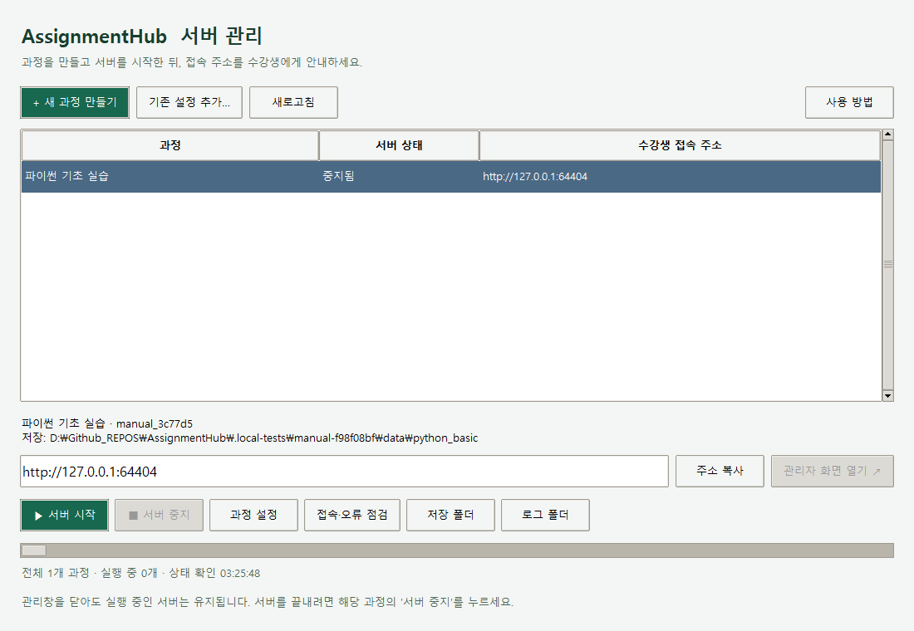
설정과 데이터의 백업
- 1. 백업 시점 해당 과정의 서버가 중지된 뒤 복사합니다. 예: 2026-09-08 수업 종료 후.
- 2. 함께 복사 instances의 과정 설정 JSON과 설정에 지정한 storage_root 폴더 전체를 같은 시점으로 복사합니다.
- 3. 보관 예시 E:\AH_Backup\2026-09-08\ 아래에 config와 data 폴더를 만들어 보관합니다. 운영 데이터는 덮어쓰지 않습니다.
- 4. 포함할 정보 DB, 인증 비밀값, 제출물, 임시 파일과 로그를 함께 보관합니다. DB만 복사하면 파일과 이력을 온전히 복구할 수 없습니다.
정확한 설정 경로와 저장 폴더는 과정 설정에서 확인합니다. 백업에는 계정 정보가 있으므로 접근을 제한합니다.
별도 폴더로 복원하는 경우
- 1. 빈 위치에 복원 원본과 복원 대상 서버를 중지하고 별도 빈 폴더에 설정과 데이터 전체를 복원합니다.
- 2. 경로 확인 설정 JSON의 storage_root는 절대 경로입니다. 복원한 실제 폴더로 맞추고 안내 IP·포트를 확인합니다.
- 3. 기존 설정 추가 관리창의 기존 설정 추가로 복원한 JSON을 선택합니다. 같은 과정 ID는 중복 등록하지 않도록 별도 배포 폴더를 사용합니다.
- 4. 접수 전 확인 서버를 시작해 로그인, 제출 목록, 대표 파일 다운로드를 확인합니다. 파일 크기·해시가 맞는지 확인한 뒤 접수를 엽니다.
이전 운영 서버와 복원 서버가 같은 저장 폴더를 동시에 사용하면 안 됩니다. 상세 절차는 관리자 운영 안내를 참고하세요.
완료 확인 중지 상태에서 설정 JSON과 저장 폴더 전체를 같은 시점으로 복사합니다. 복원 후에는 로그인·제출 목록·대표 파일의 크기와 해시를 확인한 뒤 접수를 엽니다.
12. 접속·로그인·전송 문제
상황 수강생 PC가 접속하지 못하거나 로그인·전송에 문제가 생겼습니다.
12. 다른 PC에서 접속이 안 되는 경우
- 서버 상태 점검 선택한 과정이 실행 중인지 확인하고 접속·오류 점검을 누릅니다. 안내 IP·포트와 로컬 응답 결과를 확인합니다.
- 교육장 네트워크 확인 수강생에게 전달한 URL이 실제 서버 IP인지 확인합니다. 같은 네트워크인지, 해당 TCP 포트가 허용되는지 확인합니다.
127.0.0.1과 localhost는 해당 PC 자체를 가리킵니다. 로컬 점검 성공만으로 다른 PC의 접속을 보장하지 않습니다.
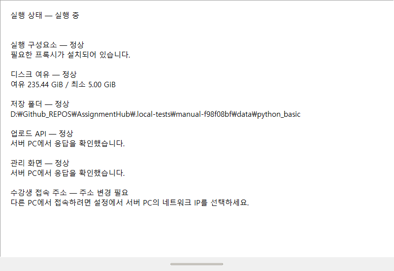
로그인·전송 문제의 확인 순서
- 로그인 실패 과정 주소, ID의 0과 대소문자를 확인합니다. 비밀번호를 잊었으면 관리자에게 초기화를 요청합니다.
- 이어 올리기 불가 같은 계정과 원본 파일인지 확인합니다. 취소하거나 기본 24시간 보관 기간이 지난 작업은 새로 제출합니다.
- 창이 좁은 경우 메뉴가 접혀 있으면 왼쪽 위에서 펼칩니다. 이어 올리기와 저장 공간은 아래로 스크롤하고, 표는 표 안에서 가로 이동합니다.
- 실행 파일 오류 배포 ZIP 전체를 새 폴더에 다시 풉니다. setup.bat와 logs/manager-startup.log로 오류 내용을 확인합니다.
문의할 때 과정명·ID·제출번호·오류 문구를 전달합니다. 비밀번호는 보내지 마세요.
완료 확인 문제가 서버 실행, 주소·네트워크, 계정, 원본 파일 또는 공간 중 어디에 있는지 확인하고 필요한 조치를 안내합니다.